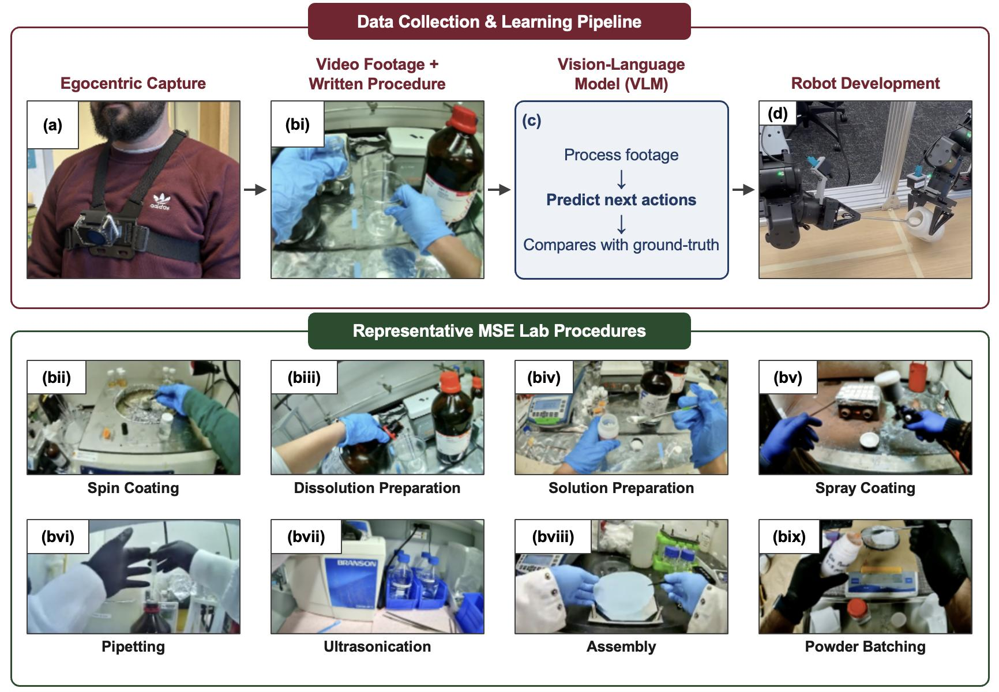
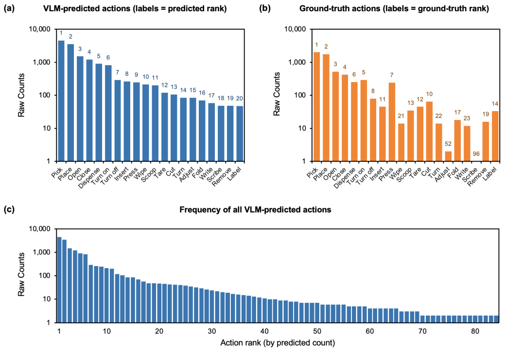
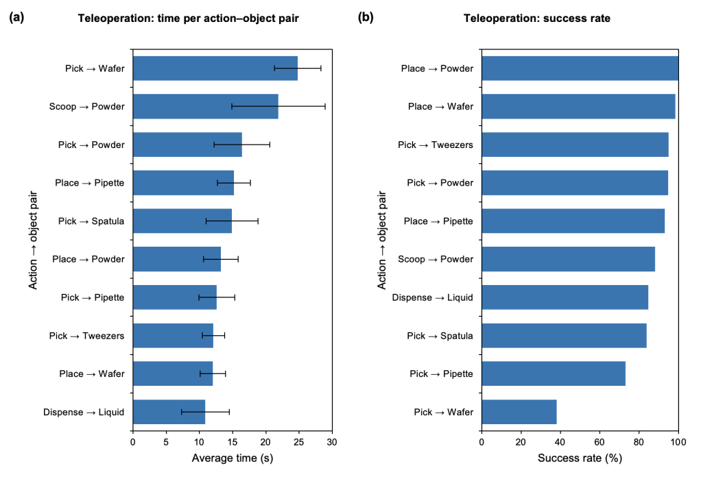
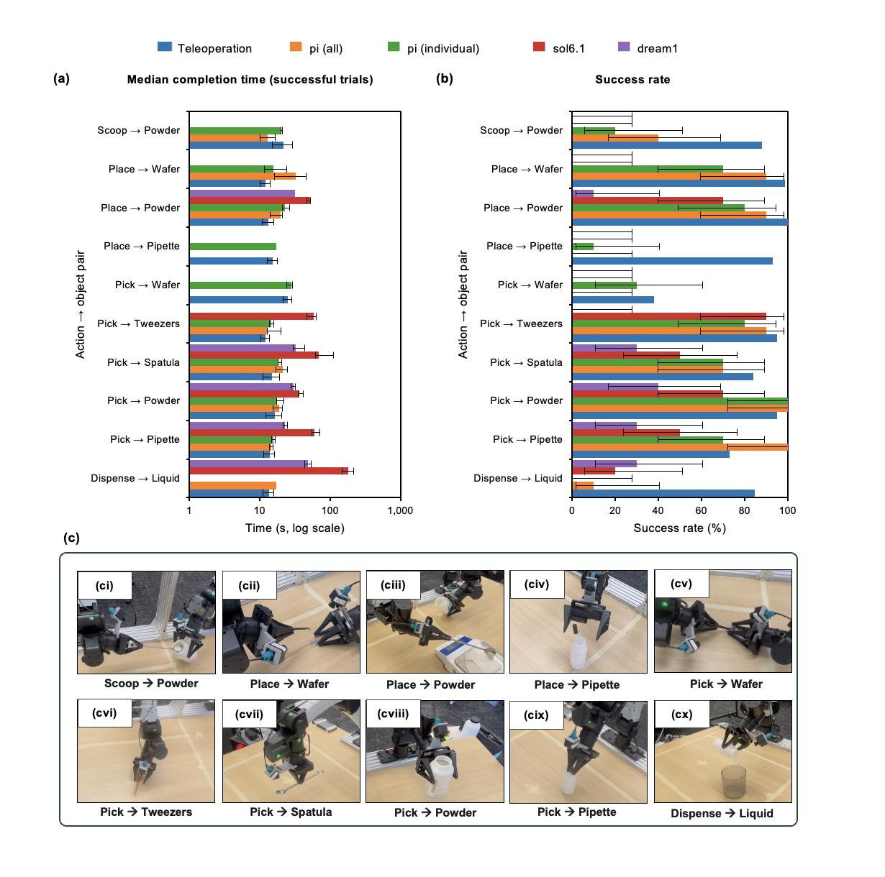

- The top 20 actions cover ~95% of all actions, with the same top four in both sources.
- The VLM finds 2.3× more actions than researchers write down: protocols skip routine steps (picking up a container, adjusting a dial) that a robot still has to do.
Increased experimental data generation is essential to realize the true potential of data science for materials discovery and commercialization. While self-driving laboratories with specialized automation offer one pathway to high-volume data generation, general-purpose robotics could leverage existing human-centric laboratory infrastructure and adapt to less-structured research environments, where diverse materials, samples, and tools are manipulated within evolving workflows rather than predefined sequences. This study collects and analyzes 442 egocentric videos comprising over 30 hours of activity across 13 materials research laboratories. At least 108 unique actions spanning more than 60 task types are identified, revealing a long-tailed distribution of actions that underscores the limitations of specialized automation. A hierarchical framework organizes workflows into actions, skills, tasks, and procedures and demonstrates the importance of linking these actions to their manipulated objects. Using the ten most frequently identified action–object pairs, existing vision-language-action models are post-trained via imitation learning on teleoperated demonstrations. Results show that contemporary robotic systems can learn common laboratory manipulations from modest datasets, while highlighting which dexterous tasks remain challenging. Together, these contributions establish an empirical foundation for general-purpose robotic assistants that can adapt to the researcher’s evolving experimental workflows rather than requiring researchers to adapt to specialized automation systems.

Researchers film their own procedures and write down every step.
A VLM labels each video with verb–object actions.
Action counts across 13 labs show what matters most.
The top 10 action–object pairs are learned from teleoperated demos.
| Size | 442 videos, 30.5 h, 21 researchers, 13 labs |
|---|---|
| Coverage | 62 task types, e.g. spin coating, powder batching, spray coating, ultrasonication |
| Capture | First-person, chest-mounted camera; researchers narrate each step |
| Ground truth | A researcher-written protocol for each procedure |
| Labels | Timestamped verb–object actions from a VLM |

Picking up a wafer with tweezers and picking up a full beaker need different grasps and forces, so we analyze action–object pairs. General verbs (pick, place) connect to almost every object; specific verbs pair with one: dispense–liquid (410), scoop–powder (133).
Figure 3, interactive. The most frequent action–object pairs, counted from the VLM's video labels or the researchers' written protocols. Hover to highlight. Object spellings are merged (e.g. “sample_box” and “sample box”).
Gemini 3.6 Flash reads frames sampled every 0.5 s and lists the actions it sees; Llama 3.3 70B converts them
into verb(object) actions. Written protocols are used only for scoring, at about $1 per hour of footage.
| Median precision | Median recall | Median F1 | |
|---|---|---|---|
| All 442 videos | 0.63 | 0.20 | 0.23 |
| 209 complete recordings | 0.67 | 0.32 | 0.36 |
When the VLM reports an action it is usually right, but it misses many steps, so it is better at finding common actions than at reconstructing full procedures.
Click a task to see every teleoperation attempt and every autonomous trial.
| Task | In footage | Teleop | Fine-tuned (~1 h of demos) | Zero-shot (no demos) | ||
|---|---|---|---|---|---|---|
| π0.5 all | π0.5 single | Sol | Dream-1 | |||
In footage: times the action–object pair appears in the lab videos. Teleop: success rate over one hour of attempts. Policies: successes in 10 autonomous trials.


Pick, place, open, and close, applied to many objects, cover most bench work.
The robot used ordinary pipettes, spatulas, tweezers, and vials.
About an hour of teleoperated demonstrations was enough for simple picks and places.
Thin wafers, pouring, and precise insertion still need a human.
@misc{wnuk2026happens,
title = {What Happens in a Materials Research Lab? A Dataset and Analysis of
Lab Work for Enabling a Generalized Robot Lab Assistant},
author = {Wnuk, Alexandra and Long, Lucas and Seshadri, Shrikar and Rakshit, Ujaan and
Kohli, Nandika and Hernandez, Nicholas and Ozmen, Eren and Losego, Mark D. and
Kousik, Shreyas and Garg, Animesh},
year = {2026}
}We thank the researchers who recorded footage for this study: Mary-Kate Broadway, Alexandra Wnuk, Eren Ozmen, Khari Fletcher, Mikis Mays, Donghyeok Roh, Matthew Yen, Thomas Jose Kallupurakel, Mahsa Namdari, Mitchell Splett, Ziting Tian, Jakub Pepas, Jiaqi Nie, Hanwoong Kim, Danae Chipoco Haro, Mohammed Tahmid, Haodong Hu, Xinyi Ding, Alec Balandin, Ariel Adadi, and Anirban Ghosh, as well as their PIs: Mark Losego, Juan-Pablo Correa-Baena, Rosario Gerhardt, Matthew McDowell, Scott Danielsen, Ryan Lively, Antonio Facchetti, Anju Toor, Hailong Chen, H. Jerri Qi, Marta Hatzell, Shucong Li, and Josh Kacher.
This research was supported by the Georgia Tech Institute for Matter and Systems and the Woodruff Innovation Nexus Funds, the National Science Foundation (DMREF-2522686), and the Office of Naval Research (N00014-21-1-2258). Any opinions, findings, and conclusions or recommendations expressed are those of the authors and do not necessarily reflect the views of Georgia Tech, the National Science Foundation, or the Office of Naval Research.